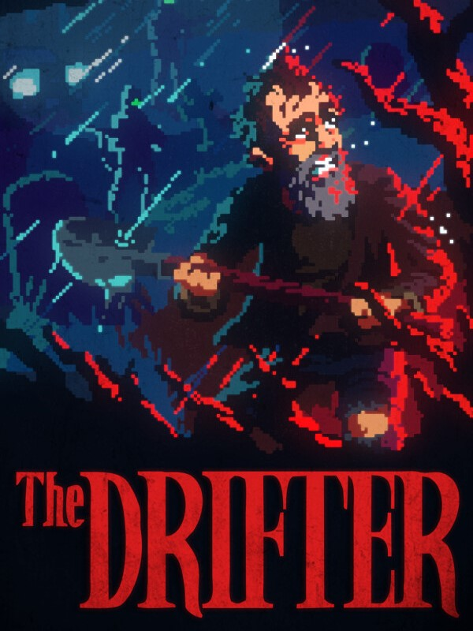

The Drifter
The Drifter
Details
|  | |
| Playtime | Not Played |
| Last Activity | Never |
| Added | 2025-10-05 23:49:39 |
| Modified | 2025-10-05 23:50:02 |
| Completion Status | Not Played |
| Library | Steam |
| Source | Steam |
| Platform | Macintosh PC (Linux) PC (Windows) |
| Release Date | 2025-07-17 |
| Community Score | 80 |
| Critic Score | 70 |
| User Score | |
| Genre | Adventure Indie Point-and-click Puzzle |
| Developer | Powerhoof |
| Publisher | Powerhoof |
| Feature | Single Player |
| Links | Official Website GOG Steam Twitch YouTube Discord Bluesky |
| Tag | 1990's 2D Adventure Atmospheric Conspiracy Controller Dark Horror Investigation Modern Mystery Noir Pixel Graphics Point & Click Sci-fi Singleplayer Story Rich Supernatural Thriller Time Manipulation |
Description

A Pulp Adventure Thriller from the minds that brought you Peridium and Crawl.
An engrossing roller-coaster of a story- Drawing on King, Crichton and Carpenter, with a dash of 70s Aussie grindhouse.
Point 'n Click or Controller- Unique twin-stick controls make The Drifter as comfy to play on the couch as at your PC.
Bursting with raw crunchy pixel art and high-impact animation.
Professionally voice acted, with a brooding dark-synth cinematic score.

Mick Carter's been drifting a while now- moving from job to job, never staying one place long. Jumping a box-car to his old home town, he witnesses a violent murder, is pursued by hi-tech soldiers, thrown in a reservoir and drowned.
And that's just the start of Mick's problems.
His consciousness ripped away, thrust back into his own body seconds before his death...
Framed for the killing he witnessed, tormented by his own past, and haunted by the feeling that something followed him back from the other side...
Follow Mick as he's sucked headfirst into a lunatic web of shadowy corporations, murder, and the thousand-year obsession of a madman.

The Drifter is our take on a classic 2d point and click adventure, with the brake-lines cut. The focus is on fast-paced storytelling, with puzzle-solving being the glue that ties it together. Mick's a practical guy, and so puzzles are down-to-earth too, designed to be unobtrusive, and give an investigative feel.
We're keeping the pacing quick and lean, you'll never be wandering around lost or confused- Mick is propelled through the story at a good clip, from one situation to another, with barely a moment to catch his breath. One minute you'll be crafting a Molotov cocktail from a bottle of over-proof rum, the next interrogating a crooked neurosurgeon before swinging from a high-rise window by a fraying extension lead.